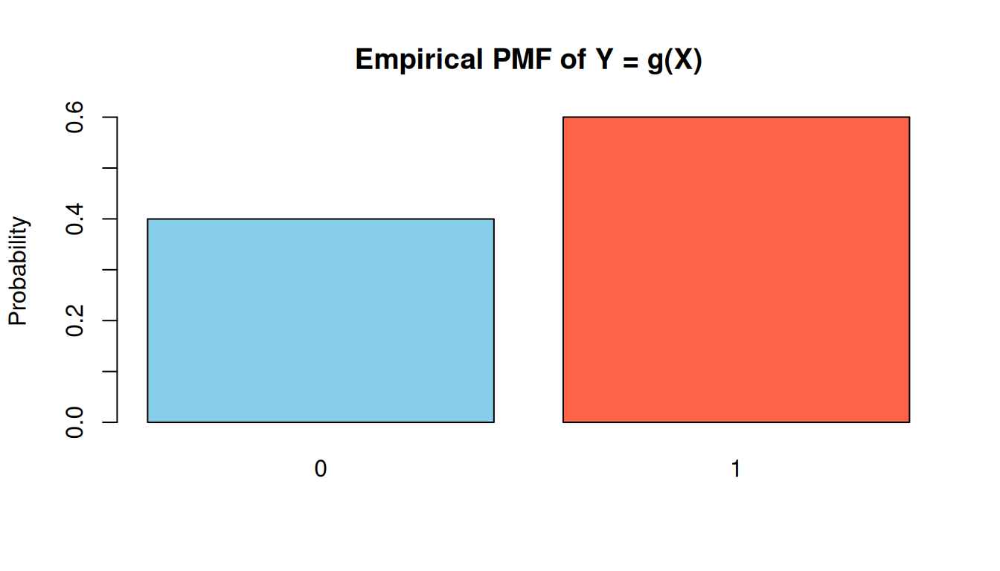
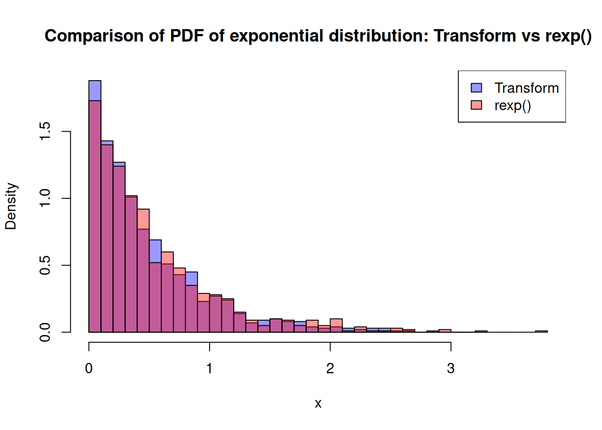
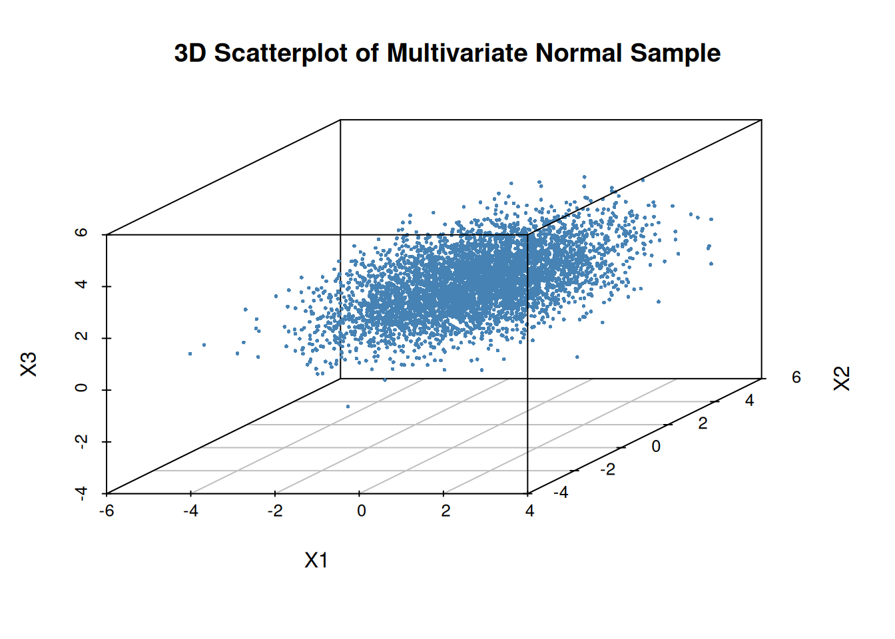

Up to this point, we have focused on how random variables behave together—their joint distributions, dependence structures, and how correlation shapes the geometry of the bivariate normal. In the final example, we saw that we can construct correlated normals by applying a linear transformation to independent ones. This idea is much more general than it first appears.
In this section, we shift our attention to how random variables change when we transform them. Whether we apply a simple function to a single variable or a linear transformation to a vector of variables, the distribution changes in systematic, mathematically predictable ways. Understanding these transformation rules is essential for simulation, modelling, and deriving new distributions from known ones.
8.1 Transformation of a Single Random Variable
When we apply a function to a random variable, the result is itself a new random variable. If \(X\) has a known distribution and we define \[
Y = g(X),
\]
then the key question is:
What is the distribution of \(Y\)?
This section develops the tools needed to answer that question for both discrete and continuous cases.
8.1.1 Discrete Case
If \(X\) is discrete with PMF \(p_X(x)\), and \(Y = g(X)\), then the PMF of \(Y\) is obtained by collecting all values of \(X\) that map to the same value of \(Y\):
\[
p_Y(y) = \sum_{x : g(x) = y} p_X(x).
\]
This is simply a “probability bookkeeping” rule: every value of \(Y\) inherits probability from the \(X\)-values that produce it.
Example: Let \(X\) take values \(\{ 1,2,3,4\}\) with \[
P(X=1)=0.1,\quad P(X=2)=0.2,
\]
Determine the PMF of \(Y\) with possible values of 0 and 1.
For \(Y=0\): this happens when \(X\) is odd, i.e. \(X\in \{ 1,3\}\).
\[
P(Y=0)=P(X=1)+P(X=3)=0.1+0.3=0.4.
\]
For \(Y=1\): this happens when \(X\) is even, i.e. \(X\in \{ 2,4\}\).
\[
P(Y=1)=P(X=2)+P(X=4)=0.2+0.4=0.6.
\]
So the PMF of \(Y\) is
\[
P(Y=0)=0.4,\qquad P(Y=1)=0.6.
\]
We can try simulating the example:
set.seed(123)# Original discrete variableX <-sample(1:4, size =5000, replace =TRUE,prob =c(0.1, 0.2, 0.3, 0.4))# TransformationY <-ifelse(X %%2==1, 0, 1)# Plot empirical pmf of Ybarplot(prop.table(table(Y)),col =c("skyblue", "tomato"),main ="Empirical PMF of Y = g(X)",ylab ="Probability")

The heights close to the theoretical values of 0.4 and 0.6.
8.1.2 Continuous Case
The method used for transforming discrete random variables cannot be applied directly to the continuous case because probabilities at individual points no longer make sense: for a continuous random variable, \(P(X=x)=0\) for all \(x\). As a result, we cannot “collect probabilities” like the previous section; instead, we must work with how probability density is redistributed under a transformation.
For continuous random variables, there are in principle two approaches: a CDF‑based method, which derives the distribution of \(Y\) by working with cumulative probabilities, and a PDF‑based method, which determines how density changes under the transformation. In this subsection, we focus on the PDF‑based method, as it provides a unified and transparent way to handle both monotone and non‑monotone transformations.
When the transformation is monotone, each value of \(Y\) corresponds to exactly one value of \(X\), so the density of \(Y\) is obtained from a single contribution. In contrast, for non‑monotone transformations, multiple values of \(X\) may map to the same value of \(Y\), and the density of \(Y\) must account for all such contributions. This perspective emphasises conservation of probability and naturally extends to more complex transformations, including multivariate cases.
flowchart LR
%% Monotone transformation
subgraph M["Monotone Y = g(X)"]
direction TB
x1["x₁"] -->|"g"| y1["y₁"]
x2["x₂"] -->|"g"| y2["y₂"]
x3["x₃"] -->|"g"| y3["y₃"]
end
%% Non-monotone transformation
subgraph N["Non‑monotone Y = g(X)"]
direction TB
a1["x₁"] -->|"g"| b1["y₁"]
a2["x₂"] -->|"g"| b2["y₂"]
a3["x₃"] -->|"g"| b2
a4["x₄"] -->|"g"| b3["y₃"]
end
%% Notes
note1["Each y has exactly one preimage"]:::note
note2["A y may have multiple preimages"]:::note
M --- note1
N --- note2
%% Styling
classDef note fill:#f5f5f5,stroke:#999,stroke-dasharray: 4 4,color:#111;
style M fill:#f5f5f5,stroke:#999,stroke-dasharray: 4 4,color:#111;
style N fill:#f5f5f5,stroke:#999,stroke-dasharray: 4 4,color:#111;
%% Make all arrows black
linkStyle default stroke:#000,stroke-width:1.5px;
8.1.2.1 Monotone Transformations
If \(X\) is continuous with PDF \(f_X(x)\) and \(Y = g(X)\) where \(g\) is strictly increasing or decreasing, then the PDF of \(Y\) is given by the change‑of‑variables formula:
The simulated \(Y\) shows a right‑skewed histogram that overlays beautifully with the theoretical \(\chi_1^2\) curve.
8.2 Inverse Transform Sampling
In the previous section, we studied how the distribution of a random variable changes when we apply a transformation, focusing on how probability density is redistributed under monotone and non‑monotone mappings. In simulation, however, we often face the inverse problem: rather than starting with a random variable and determining the distribution of its transformation, we want to construct a random variable with a specified distribution in the first place. Inverse transform sampling provides a direct solution to this problem by reversing the logic of transformation.
Starting from a Uniform(0,1) random variable—the fundamental output of most random number generators—we apply an appropriate inverse transformation to obtain samples from a desired distribution. This method makes explicit the connection between transformation theory and simulation practice, and it highlights why understanding how probability behaves under transformations is essential for building simulation algorithms.
We have already seen examples of this idea in practice, such as generating Bernoulli and Exponential random variables from Uniform(0,1) values; inverse transform sampling now formalises this approach and explains why it works in general.
8.2.1 Probability Integral Transform
A key theoretical result underlying inverse transform sampling is the Probability Integral Transform. The probability integral transform explains why uniform random variables play a fundamental role in simulation and provides the theoretical justification for constructing new random variables by transforming Uniform(0,1) draws.
For inverse transform sampling, we work directly with the cumulative distribution function. If \(X\) is a continuous random variable with cumulative distribution function \(F_X\), then the transformed variable: \[
U = F_X(X) \sim \text{Uniform}(0,1).
\]
Turning it around gives the sampling rule:
\[X = F_X^{-1}(U), \qquad U \sim \text{Uniform}(0,1).\]
This result allows us to turn the theoretical relationship between a random variable and its CDF into a practical simulation algorithm.
8.2.2 Inverse Transform Sampling Algorithm
The probability integral transform provides the theoretical justification for inverse transform sampling. We now turn this result into a practical simulation algorithm. The goal is to generate random variables with a specified distribution using only Uniform(0,1) random numbers.
Suppose we want to simulate a continuous random variable with cumulative distribution function \(F_X\), and assume that the inverse CDF \(F_X^{-1}\) is available in closed form. The inverse transform sampling algorithm proceeds as follows:
Generate a random number \[
U \sim \text{Uniform}(0,1).
\]
Transform this value using the inverse CDF: \[
X = F_X^{-1}(U).
\]
The resulting value \(X\) is a random draw from the target distribution with CDF \(F_X\).
This algorithm works because the inverse transformation exactly reverses the probability integral transform. Since \(F_X(X)\) is uniformly distributed on \([0,1]\), applying the inverse CDF to a Uniform(0,1) random variable reconstructs the original distribution. In this sense, inverse transform sampling is a direct application of transformation theory: it constructs a desired distribution by transforming a simpler one.
Inverse transform sampling is conceptually simple and widely used in simulation, particularly when the inverse CDF has a closed‑form expression. However, not all distributions admit an explicit inverse CDF, which motivates alternative simulation methods introduced later in the course.
We now illustrate this algorithm with a simple example where the inverse CDF can be derived explicitly.
8.2.3 Examples and Limitations
Example (Exponential distribution).
We briefly previewed this idea earlier; here we are using it as a worked example of the general inverse transform algorithm.
Inverse transform sampling is easiest to see when the inverse CDF has a simple closed form. For the Exponential distribution with rate \(\lambda\), the CDF is
\[
F(x)=1-e^{-\lambda x},\qquad x\ge 0.
\]
Setting \(U=F(X)\) and solving for \(X\) gives the inverse transform
\[
X = F^{-1}(U)= -\frac{1}{\lambda}\log(1-U),\qquad U\sim \text{Uniform}(0,1).
\]
The following R code implements the algorithm in three steps—generate uniforms, apply the inverse CDF, then validate the result by comparing the simulated histogram to rexp(). This mirrors the core simulation workflow:
set.seed(123)# Step 1: generate Uniform(0,1) valuesu <-runif(1000)# Step 2: transform them into Exponential(lambda)lambda <-2# rate parameterx <--log(1- u) / lambda# Step 3: Plot and compare with R's built-in rexp()x_builtin <-rexp(1000, rate = lambda)hist(x, breaks =30, col =rgb(0,0,1,0.4), freq =FALSE,main ="Comparison of PDF of exponential distribution: Transform vs rexp()")hist(x_builtin, breaks =30, col =rgb(1,0,0,0.4), freq =FALSE, add =TRUE)legend("topright", legend =c("Transform", "rexp()"),fill =c(rgb(0,0,1,0.4), rgb(1,0,0,0.4)))

Limitations (why we need other methods).
Inverse transform sampling is conceptually simple, but it has practical limitations:
You need an invertible CDF (or a tractable numerical inverse).
Many common distributions do not have a neat closed-form inverse CDF, so applying \(F^{-1}\) directly may be difficult or computationally expensive.
Not all transformations are “one-line” like the exponential.
Even when the CDF exists and is monotone, solving \(u = F(x)\) for \(x\) may not be algebraically possible.
This motivates alternative sampling techniques.
When \(F^{-1}\) is unavailable or inefficient, we use other approaches (e.g., acceptance–rejection or specialised transformations such as Box–Muller for Normal simulation), which you cover later in the unit.
8.3 Transformation of Multiple Random Variables
In many applications, we work not with a single random variable but with a pair (or vector) of variables whose joint distribution is known. When we apply a transformation to such a pair, the result is a new pair of random variables whose joint distribution we often need to determine. This section develops the tools for understanding how probability densities change under transformations of two (or more) variables.
Transformations of multiple random variables arise naturally in statistics, simulation, and modelling. Examples include converting Cartesian coordinates to polar coordinates, forming sums and differences of random variables, and applying linear transformations to generate correlated normals. The key idea is that probability must be preserved under the transformation, and the mathematical tool that ensures this is the Jacobian.
8.3.1 Transformations of Two Random Variables
Why This Matters
Transformations of multiple random variables allow us to:
derive distributions of sums, ratios, and other combinations,
change coordinate systems to simplify integrals,
understand how linear maps create covariance,
simulate multivariate distributions efficiently,
and prepare for higher‑dimensional transformations in later topics.
This section builds the foundation for the next major topic: linear transformations and the multivariate normal, where the Jacobian plays a central role in understanding how densities behave under matrix transformations.
Suppose \((X, Y)\) has a known joint density \(f_{X,Y}(x,y)\), and we define a new pair:
\[
U = g_1(X, Y), \qquad V = g_2(X, Y).
\]
Our goal is to find the joint density \(f_{U,V}(u,v)\).
If the transformation is one‑to‑one and differentiable, we can invert it:
\[
x = h_1(u,v), \qquad y = h_2(u,v),
\]
and use the Jacobian determinant to adjust for how the transformation stretches or compresses area.
8.3.2 The Jacobian Formula (Continuous Case)
If the transformation is smooth and invertible, then
is the Jacobian matrix of the inverse transformation.
The determinant \(|\det J|\) measures how the transformation changes area, ensuring that total probability remains 1.
Example 1: Sums and Differences
Let \((X,Y)\) have joint density \(f_{X,Y}(x,y)\). Defin
\[
U = X + Y, \qquad V = X - Y.
\]
This transformation is linear and invertible, and the Jacobian is constant.
It is widely used in deriving distributions of sums of independent normals.
Step 1: Invert the transformation
Solve for \(X, Y\) in terms of \(U, V\):
\[
X = \dfrac{U + V}{2}, \qquad Y = \dfrac{U - V}{2}.
\]
So
\[
x = h_1(u,v) = \dfrac{u+v}{2}, \quad
y = h_2(u,v) = \dfrac{u-v}{2}.
\]
\[
f_{R,\Theta}(r,\theta)
= f_{X,Y}(r\cos\theta, r\sin\theta)\cdot r.
\]
set.seed(1)n <-5000X <-rnorm(n)Y <-rnorm(n)R <-sqrt(X^2+ Y^2)Theta <-atan2(Y, X)par(mfrow =c(1, 2))hist(R, breaks =40, freq =FALSE, col ="lightgray",main ="Distribution of R",xlab ="R")curve(dchisq(x^2, df =2) *2*x, add =TRUE, col ="darkgreen", lwd =2)hist(Theta, breaks =40, freq =FALSE, col ="lightblue",main ="Distribution of Theta",xlab =expression(theta))
R follows the Rayleigh distribution (equivalently, \(R^2\sim \chi_2^2\)).
\(\Theta\) is uniform on \([-\pi ,\pi ]\).
Example 3: Linear Transformations
Let \((X, Y)\) have joint density \(f_{X,Y}(x,y)\), and let \[
\begin{pmatrix} U \\ V \end{pmatrix}
=
A \begin{pmatrix} X \\ Y \end{pmatrix},
\quad
A =
\begin{pmatrix}
a & b \\
c & d
\end{pmatrix},
\]
with \(\det A \neq 0\). Then the Jacobian determinant is simply \(|\det A|\).
This case is especially important for the multivariate normal distribution, where linear transformations create covariance structures. The correlated‑normal simulation you used earlier is a special case of this idea.
Step 1: Invert the transformation
Because \(\det A \neq 0\), \(A\) is invertible:
\[
\begin{pmatrix} X \\ Y \end{pmatrix}
= A^{-1} \begin{pmatrix} U \\ V \end{pmatrix}.
\]
Write
\[
A^{-1} =
\frac{1}{ad - bc}
\begin{pmatrix}
d & -b \\
-c & a
\end{pmatrix}.
\]
So
\[
x = h_1(u,v), \quad y = h_2(u,v)
\]
are linear functions of \((u,v)\).
Step 2: Jacobian of the inverse
For a linear map, the Jacobian matrix of the inverse is just \(A^{-1}\), so
The original cloud is round (independent normals).
The transformed cloud becomes tilted and stretched, showing induced correlation.
8.4 Linear Transformations and the Multivariate Normal
Linear transformations play a central role in probability and statistics, especially when working with multivariate normal distributions. In earlier sections, we saw how a linear transformation of two independent standard normals can create correlation. Here, we generalise that idea and show how any multivariate normal distribution can be constructed from a standard one using a matrix transformation.
Why This Matters
Linear transformations of multivariate normals underpin:
simulation of correlated variables,
regression and linear models,
principal component analysis (PCA),
Bayesian multivariate priors,
and nearly all multivariate statistical methods.
This section forms the conceptual bridge between probability theory and practical statistical modelling.
8.4.1 Linear Transformations of Random Vectors
Let \[
\mathbf{X} = (X_1, X_2, \dots, X_k)^\top
\] be a random vector, and let \(A\) be a fixed \(m \times k\) matrix. A linear transformation of \(\mathbf{X}\) is
\[
\mathbf{Y} = A\mathbf{X} + \mathbf{b},
\] where \(\mathbf{b}\) is a constant vector.
This transformation:
rotates, stretches, or compresses the space,
shifts the mean by \(\mathbf{b}\),
and reshapes the covariance structure through the matrix \(A\).
8.4.2 The Multivariate Normal Distribution
A random vector \(\mathbf{X}\) is multivariate normal if every linear combination of its components is normally distributed.
If \[
\mathbf{X} \sim N(\boldsymbol{\mu}, \Sigma),
\] then:
\(\boldsymbol{\mu}\) is the mean vector,
\(\Sigma\) is the covariance matrix (symmetric and positive‑definite).
The sample covariance of \(X\) matches \(\Sigma\).
The construction works in any dimension.
set.seed(1)# 3D mean and covariancemu <-c(0, 1, 2)Sigma <-matrix(c(1, 0.5, 0.2,0.5, 2, 0.3,0.2, 0.3, 1), 3, 3)n <-5000# Cholesky factorL <-chol(Sigma)# Standard normalsZ <-matrix(rnorm(3*n), n, 3)# Construct X = Z L^T + muX <- Z %*%t(L) +matrix(mu, n, 3, byrow =TRUE)# 3D scatterplotlibrary(scatterplot3d)scatterplot3d(X[,1], X[,2], X[,3],pch =16, cex.symbols =0.4,color ="steelblue",main ="3D Scatterplot of Multivariate Normal Sample",xlab ="X1", ylab ="X2", zlab ="X3")

A 3D elliptical cloud whose shape reflects the covariance matrix.
The cloud is tilted and stretched in directions determined by \(\Sigma\).
This visually reinforces the idea that \(X=LZ+\mu\).